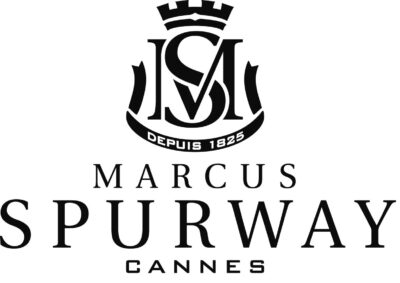

Marcus Spurway est une maison française de parfumerie fondée à Cannes en 1825. Son histoire est étroitement liée au savoir-faire de la parfumerie française et à la ville de Grasse, capitale mondiale du parfum.
La marque s’est notamment fait connaître grâce à ses parfums sur mesure et à ses créations destinées à une clientèle prestigieuse. Au fil des années, elle a développé un savoir-faire artisanal fondé sur la sélection de matières premières nobles et la création de compositions originales.
Aujourd’hui, Marcus Spurway se positionne dans l’univers de la parfumerie de niche, tout en cherchant à rendre cet univers plus accessible grâce à la vente directe et à ses ateliers olfactifs. Ses produits sont fabriqués près de Grasse et comprennent des parfums, des cosmétiques et des produits pour la maison.
En résumé, Marcus Spurway représente l’alliance entre tradition française, artisanat, créativité et modernité.

Retrouvez l'intégralité de nos produits en cliquant ici
✨ Et si vous rejoigniez l’aventure Marcus Spurway ?
Rejoindre Marcus Spurway et mon équipe, c’est avant tout vivre une belle aventure humaine, partager des moments conviviaux et profiter d’une activité flexible, sans pression et à votre rythme.
🌸 Pourquoi rejoindre mon équipe ?
Une question ? Une envie d'en savoir plus ?
Que vous souhaitiez découvrir l’univers de Marcus Spurway, participer à un atelier ou simplement échanger autour de cette aventure, contactez-moi. 💌